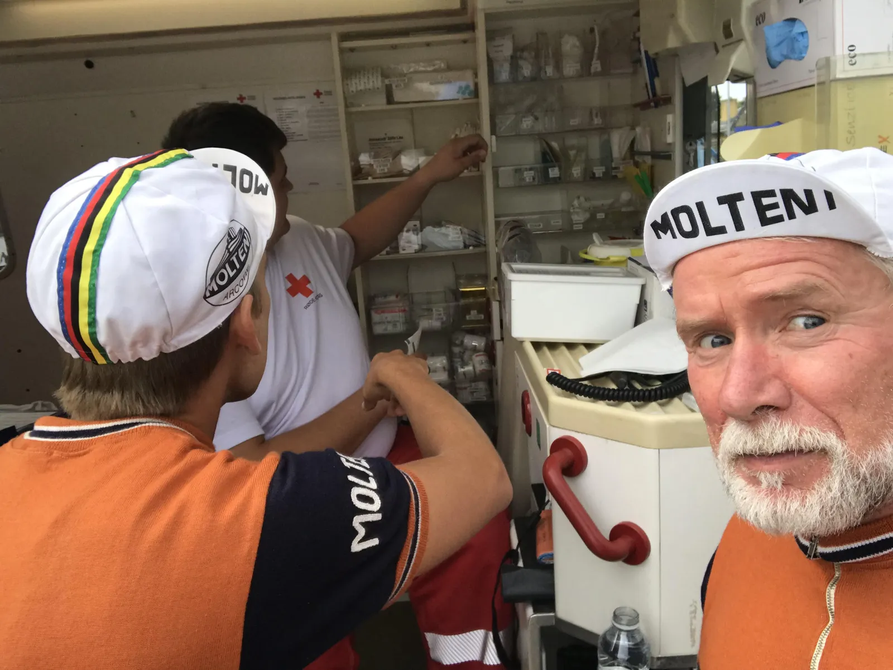
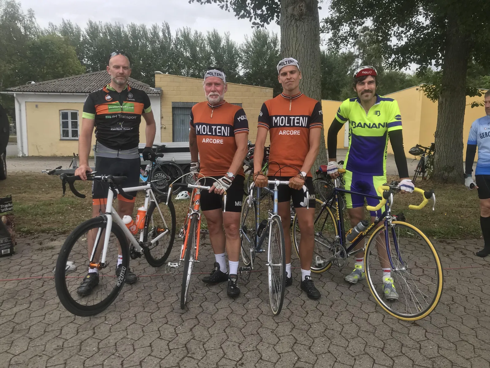

Puncheur Thiemer på podiet i Arresø Rundt.

Licensrytterne og carbonfolket var advaret om Squadra Moltenis taktik til Arresø rundt. På en time og tre kvarter fik de den så også set den udført da Jeppe Thiemer kørte ind på en flot 3. plads.
– Lige inden start var vi henne hos vores nye italienske samarbejdspartner, der var forklædt som samaritter i løbets ambulance. Her får jeg en af Ricardo Riccos gamle poser skudt direkte i hovedpulsåren, og det gav altså stærk tobak i piberne, afslører en glad Jeppe Thiemer.


Der var 179 til start på 58 km ruten – som dog var udvidet til 61 km. En gruppe på cirka 30 ryttere satte fart fra kilometer 1, og her sad både Jeppe Thiemer og vejkaptajn Jens Langergaard med, flankeret af en anden markant stålrytter, Søren Pedersen fra Team Banani.
De første tyve kilometer holdt Jeppe benene igang lidt nede i gruppen mens vejkaptajn Langergaard sad foran og tog del i føringsarbejdet. I gruppen befandt der sig også en anden stålrytter, nemlig Henrik Holdt. Omend hans stålcykel var en moderne anno 2018 slår han efter 10 kilometer et hul. Det bliver dog ikke større, end at der er i front er enighed om, at dér måtte han gerne hænge lidt.
Efter 20 kilometer laver Søren Pedersen fra Team Banani et forsøg på at komme op til Henrik Holdt, men Pedersens TV-udbrud køres ind, hvilket også bevirker at gruppen efter Holdt decimeres til cirka 15-20 ryttere.
Moltenis taktik var som bekendt at få at Jeppe afsted på bakken kort før mål i Frederikssund. Men en bakke er vel en bakke.
– Jens gennemgår taktikken for mig kort før start, og jeg hører noget med at jeg skal angribe på en eller anden bakke. Så da det begynder at gå lidt opad mod Ramløse angriber jeg fra spids og feltet knækker lynhurtigt over, fortæller Thimer
Jeppe får følgeskab af to andre ryttere, og sammen jager de soloudbryderen Holdt, men uden held, selvom han er inden for synsvidde resten af løbet. Føringsarbejdet går på skift, men op ad stigningerne overlades det til Moltenis tempofænomen. Thiemer får da også nok af denne arbejdsfordeling og på bakken op til Frederiksværk forcerer Jeppe – og så er forfølgergruppen reduceret til to mand. Jagten fortsætter helt mod mål hvor 2. og 3. pladsen skal fordeles.
– Indholdet i Riccos pose må været gået over dato, for lige inden målstregen føles det som om mine lår klumper til, og jeg kan ikke træde mig forbi til 2. pladsen. Jeg har sendt en prøve af sted til holdlæge Finn Birk, der skal se nærmere på det, udtaler Thiemer.
Jens Langergaard blev nummer 32 – 10 minutter efter Thiemer.
– Da Jeppe kom afsted ved Ramløse bakkede jeg naturligvis lidt af, og slår følge med en nordmand i resterne af den gruppe som Jeppe er stukket af fra. Med 15 km til mål punkterer nordmanden og jeg spørger “klarer du den selv”? Nej, svarer han. Det viser sig han hverken har slange eller pumpe med. Flinke som vi er på Squadra Molteni fixer jeg punkteringen,” lyder det fra Langergaard.

